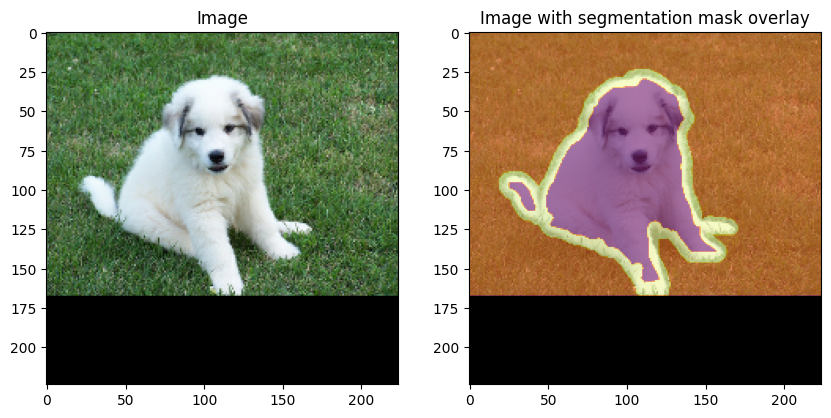
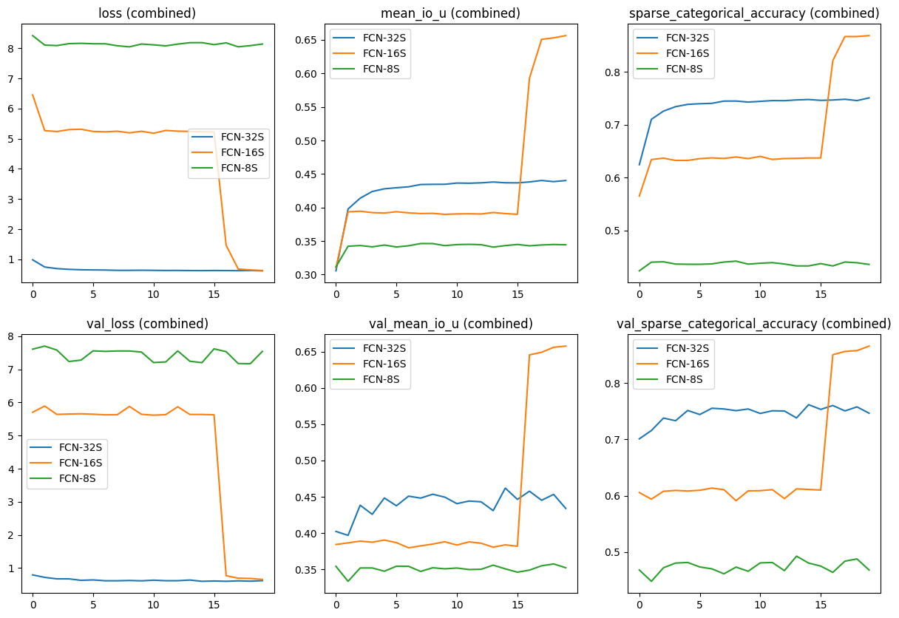
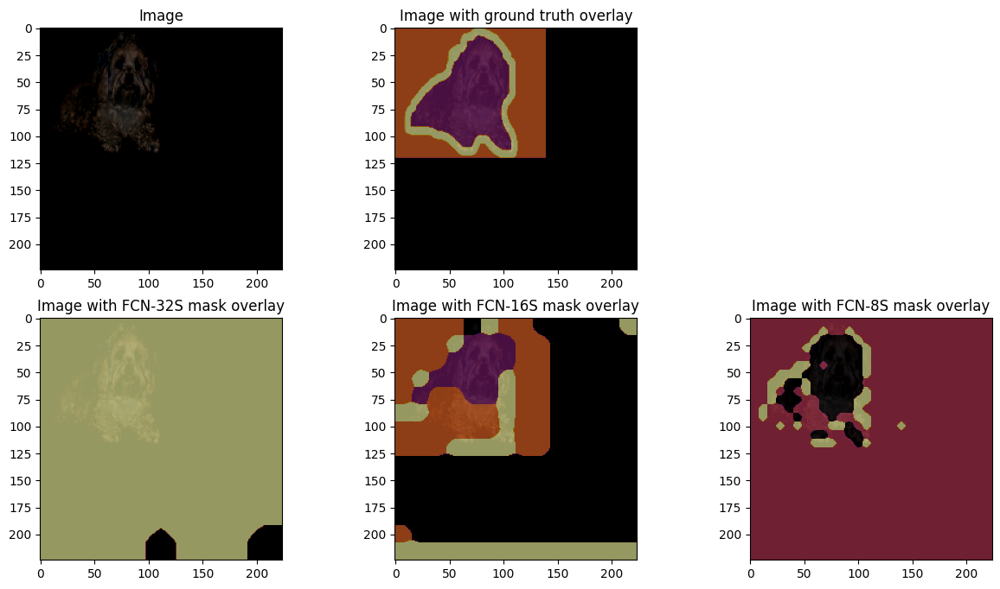

Image Segmentation using Composable Fully-Convolutional Networks
Author: Suvaditya Mukherjee
Date created: 2023/06/16
Last modified: 2023/12/25
Description: Using the Fully-Convolutional Network for Image Segmentation.

Introduction
The following example walks through the steps to implement Fully-Convolutional Networks for Image Segmentation on the Oxford-IIIT Pets dataset. The model was proposed in the paper, Fully Convolutional Networks for Semantic Segmentation by Long et. al.(2014). Image segmentation is one of the most common and introductory tasks when it comes to Computer Vision, where we extend the problem of Image Classification from one-label-per-image to a pixel-wise classification problem. In this example, we will assemble the aforementioned Fully-Convolutional Segmentation architecture, capable of performing Image Segmentation. The network extends the pooling layer outputs from the VGG in order to perform upsampling and get a final result. The intermediate outputs coming from the 3rd, 4th and 5th Max-Pooling layers from VGG19 are extracted out and upsampled at different levels and factors to get a final output with the same shape as that of the output, but with the class of each pixel present at each location, instead of pixel intensity values. Different intermediate pool layers are extracted and processed upon for different versions of the network. The FCN architecture has 3 versions of differing quality.
- FCN-32S
- FCN-16S
- FCN-8S
All versions of the model derive their outputs through an iterative processing of successive intermediate pool layers of the main backbone used. A better idea can be gained from the figure below.
 |
|---|
| Diagram 1: Combined Architecture Versions (Source: Paper) |
To get a better idea on Image Segmentation or find more pre-trained models, feel free to navigate to the Hugging Face Image Segmentation Models page, or a PyImageSearch Blog on Semantic Segmentation
Setup Imports
import os
os.environ["KERAS_BACKEND"] = "tensorflow"
import keras
from keras import ops
import tensorflow as tf
import matplotlib.pyplot as plt
import tensorflow_datasets as tfds
import numpy as np
AUTOTUNE = tf.data.AUTOTUNE
Set configurations for notebook variables
We set the required parameters for the experiment. The chosen dataset has a total of 4 classes per image, with regards to the segmentation mask. We also set our hyperparameters in this cell.
Mixed Precision as an option is also available in systems which support it, to reduce
load.
This would make most tensors use 16-bit float values instead of 32-bit float
values, in places where it will not adversely affect computation.
This means, during computation, TensorFlow will use 16-bit float Tensors to increase speed at the cost of precision,
while storing the values in their original default 32-bit float form.
NUM_CLASSES = 4
INPUT_HEIGHT = 224
INPUT_WIDTH = 224
LEARNING_RATE = 1e-3
WEIGHT_DECAY = 1e-4
EPOCHS = 20
BATCH_SIZE = 32
MIXED_PRECISION = True
SHUFFLE = True
# Mixed-precision setting
if MIXED_PRECISION:
policy = keras.mixed_precision.Policy("mixed_float16")
keras.mixed_precision.set_global_policy(policy)
INFO:tensorflow:Mixed precision compatibility check (mixed_float16): OK
Your GPU will likely run quickly with dtype policy mixed_float16 as it has compute capability of at least 7.0. Your GPU: Quadro RTX 5000, compute capability 7.5
Load dataset
We make use of the Oxford-IIIT Pets dataset which contains a total of 7,349 samples and their segmentation masks. We have 37 classes, with roughly 200 samples per class. Our training and validation dataset has 3,128 and 552 samples respectively. Aside from this, our test split has a total of 3,669 samples.
We set a batch_size parameter that will batch our samples together, use a shuffle
parameter to mix our samples together.
(train_ds, valid_ds, test_ds) = tfds.load(
"oxford_iiit_pet",
split=["train[:85%]", "train[85%:]", "test"],
batch_size=BATCH_SIZE,
shuffle_files=SHUFFLE,
)
Unpack and preprocess dataset
We define a simple function that includes performs Resizing over our training, validation and test datasets. We do the same process on the masks as well, to make sure both are aligned in terms of shape and size.
# Image and Mask Pre-processing
def unpack_resize_data(section):
image = section["image"]
segmentation_mask = section["segmentation_mask"]
resize_layer = keras.layers.Resizing(INPUT_HEIGHT, INPUT_WIDTH)
image = resize_layer(image)
segmentation_mask = resize_layer(segmentation_mask)
return image, segmentation_mask
train_ds = train_ds.map(unpack_resize_data, num_parallel_calls=AUTOTUNE)
valid_ds = valid_ds.map(unpack_resize_data, num_parallel_calls=AUTOTUNE)
test_ds = test_ds.map(unpack_resize_data, num_parallel_calls=AUTOTUNE)
Visualize one random sample from the pre-processed dataset
We visualize what a random sample in our test split of the dataset looks like, and plot the segmentation mask on top to see the effective mask areas. Note that we have performed pre-processing on this dataset too, which makes the image and mask size same.
# Select random image and mask. Cast to NumPy array
# for Matplotlib visualization.
images, masks = next(iter(test_ds))
random_idx = keras.random.uniform([], minval=0, maxval=BATCH_SIZE, seed=10)
test_image = images[int(random_idx)].numpy().astype("float")
test_mask = masks[int(random_idx)].numpy().astype("float")
# Overlay segmentation mask on top of image.
fig, ax = plt.subplots(nrows=1, ncols=2, figsize=(10, 5))
ax[0].set_title("Image")
ax[0].imshow(test_image / 255.0)
ax[1].set_title("Image with segmentation mask overlay")
ax[1].imshow(test_image / 255.0)
ax[1].imshow(
test_mask,
cmap="inferno",
alpha=0.6,
)
plt.show()

Perform VGG-specific pre-processing
keras.applications.VGG19 requires the use of a preprocess_input function that will
pro-actively perform Image-net style Standard Deviation Normalization scheme.
def preprocess_data(image, segmentation_mask):
image = keras.applications.vgg19.preprocess_input(image)
return image, segmentation_mask
train_ds = (
train_ds.map(preprocess_data, num_parallel_calls=AUTOTUNE)
.shuffle(buffer_size=1024)
.prefetch(buffer_size=1024)
)
valid_ds = (
valid_ds.map(preprocess_data, num_parallel_calls=AUTOTUNE)
.shuffle(buffer_size=1024)
.prefetch(buffer_size=1024)
)
test_ds = (
test_ds.map(preprocess_data, num_parallel_calls=AUTOTUNE)
.shuffle(buffer_size=1024)
.prefetch(buffer_size=1024)
)
Model Definition
The Fully-Convolutional Network boasts a simple architecture composed of only
keras.layers.Conv2D Layers, keras.layers.Dense layers and keras.layers.Dropout
layers.
 |
|---|
| Diagram 2: Generic FCN Forward Pass (Source: Paper) |
Pixel-wise prediction is performed by having a Softmax Convolutional layer with the same size of the image, such that we can perform direct comparison We can find several important metrics such as Accuracy and Mean-Intersection-over-Union on the network.
Backbone (VGG-19)
We use the VGG-19 network as the backbone, as
the paper suggests it to be one of the most effective backbones for this network.
We extract different outputs from the network by making use of keras.models.Model.
Following this, we add layers on top to make a network perfectly simulating that of
Diagram 1.
The backbone's keras.layers.Dense layers will be converted to keras.layers.Conv2D
layers based on the original Caffe code present here.
All 3 networks will share the same backbone weights, but will have differing results
based on their extensions.
We make the backbone non-trainable to improve training time requirements.
It is also noted in the paper that making the network trainable does not yield major benefits.
input_layer = keras.Input(shape=(INPUT_HEIGHT, INPUT_WIDTH, 3))
# VGG Model backbone with pre-trained ImageNet weights.
vgg_model = keras.applications.vgg19.VGG19(include_top=True, weights="imagenet")
# Extracting different outputs from same model
fcn_backbone = keras.models.Model(
inputs=vgg_model.layers[1].input,
outputs=[
vgg_model.get_layer(block_name).output
for block_name in ["block3_pool", "block4_pool", "block5_pool"]
],
)
# Setting backbone to be non-trainable
fcn_backbone.trainable = False
x = fcn_backbone(input_layer)
# Converting Dense layers to Conv2D layers
units = [4096, 4096]
dense_convs = []
for filter_idx in range(len(units)):
dense_conv = keras.layers.Conv2D(
filters=units[filter_idx],
kernel_size=(7, 7) if filter_idx == 0 else (1, 1),
strides=(1, 1),
activation="relu",
padding="same",
use_bias=False,
kernel_initializer=keras.initializers.Constant(1.0),,
)
dense_convs.append(dense_conv)
dropout_layer = keras.layers.Dropout(0.5)
dense_convs.append(dropout_layer)
dense_convs = keras.Sequential(dense_convs)
dense_convs.trainable = False
x[-1] = dense_convs(x[-1])
pool3_output, pool4_output, pool5_output = x
FCN-32S
We extend the last output, perform a 1x1 Convolution and perform 2D Bilinear Upsampling
by a factor of 32 to get an image of the same size as that of our input.
We use a simple keras.layers.UpSampling2D layer over a keras.layers.Conv2DTranspose
since it yields performance benefits from being a deterministic mathematical operation
over a Convolutional operation
It is also noted in the paper that making the Up-sampling parameters trainable does not yield benefits.
Original experiments of the paper used Upsampling as well.
# 1x1 convolution to set channels = number of classes
pool5 = keras.layers.Conv2D(
filters=NUM_CLASSES,
kernel_size=(1, 1),
padding="same",
strides=(1, 1),
activation="relu",
)
# Get Softmax outputs for all classes
fcn32s_conv_layer = keras.layers.Conv2D(
filters=NUM_CLASSES,
kernel_size=(1, 1),
activation="softmax",
padding="same",
strides=(1, 1),
)
# Up-sample to original image size
fcn32s_upsampling = keras.layers.UpSampling2D(
size=(32, 32),
data_format=keras.backend.image_data_format(),
interpolation="bilinear",
)
final_fcn32s_pool = pool5(pool5_output)
final_fcn32s_output = fcn32s_conv_layer(final_fcn32s_pool)
final_fcn32s_output = fcn32s_upsampling(final_fcn32s_output)
fcn32s_model = keras.Model(inputs=input_layer, outputs=final_fcn32s_output)
FCN-16S
The pooling output from the FCN-32S is extended and added to the 4th-level Pooling output of our backbone. Following this, we upsample by a factor of 16 to get image of the same size as that of our input.
# 1x1 convolution to set channels = number of classes
# Followed from the original Caffe implementation
pool4 = keras.layers.Conv2D(
filters=NUM_CLASSES,
kernel_size=(1, 1),
padding="same",
strides=(1, 1),
activation="linear",
kernel_initializer=keras.initializers.Zeros(),
)(pool4_output)
# Intermediate up-sample
pool5 = keras.layers.UpSampling2D(
size=(2, 2),
data_format=keras.backend.image_data_format(),
interpolation="bilinear",
)(final_fcn32s_pool)
# Get Softmax outputs for all classes
fcn16s_conv_layer = keras.layers.Conv2D(
filters=NUM_CLASSES,
kernel_size=(1, 1),
activation="softmax",
padding="same",
strides=(1, 1),
)
# Up-sample to original image size
fcn16s_upsample_layer = keras.layers.UpSampling2D(
size=(16, 16),
data_format=keras.backend.image_data_format(),
interpolation="bilinear",
)
# Add intermediate outputs
final_fcn16s_pool = keras.layers.Add()([pool4, pool5])
final_fcn16s_output = fcn16s_conv_layer(final_fcn16s_pool)
final_fcn16s_output = fcn16s_upsample_layer(final_fcn16s_output)
fcn16s_model = keras.models.Model(inputs=input_layer, outputs=final_fcn16s_output)
FCN-8S
The pooling output from the FCN-16S is extended once more, and added from the 3rd-level Pooling output of our backbone. This result is upsampled by a factor of 8 to get an image of the same size as that of our input.
# 1x1 convolution to set channels = number of classes
# Followed from the original Caffe implementation
pool3 = keras.layers.Conv2D(
filters=NUM_CLASSES,
kernel_size=(1, 1),
padding="same",
strides=(1, 1),
activation="linear",
kernel_initializer=keras.initializers.Zeros(),
)(pool3_output)
# Intermediate up-sample
intermediate_pool_output = keras.layers.UpSampling2D(
size=(2, 2),
data_format=keras.backend.image_data_format(),
interpolation="bilinear",
)(final_fcn16s_pool)
# Get Softmax outputs for all classes
fcn8s_conv_layer = keras.layers.Conv2D(
filters=NUM_CLASSES,
kernel_size=(1, 1),
activation="softmax",
padding="same",
strides=(1, 1),
)
# Up-sample to original image size
fcn8s_upsample_layer = keras.layers.UpSampling2D(
size=(8, 8),
data_format=keras.backend.image_data_format(),
interpolation="bilinear",
)
# Add intermediate outputs
final_fcn8s_pool = keras.layers.Add()([pool3, intermediate_pool_output])
final_fcn8s_output = fcn8s_conv_layer(final_fcn8s_pool)
final_fcn8s_output = fcn8s_upsample_layer(final_fcn8s_output)
fcn8s_model = keras.models.Model(inputs=input_layer, outputs=final_fcn8s_output)
Load weights into backbone
It was noted in the paper, as well as through experimentation that extracting the weights
of the last 2 Fully-connected Dense layers from the backbone, reshaping the weights to
fit that of the keras.layers.Dense layers we had previously converted into
keras.layers.Conv2D, and setting them to it yields far better results and a significant
increase in mIOU performance.
# VGG's last 2 layers
weights1 = vgg_model.get_layer("fc1").get_weights()[0]
weights2 = vgg_model.get_layer("fc2").get_weights()[0]
weights1 = weights1.reshape(7, 7, 512, 4096)
weights2 = weights2.reshape(1, 1, 4096, 4096)
dense_convs.layers[0].set_weights([weights1])
dense_convs.layers[2].set_weights([weights2])
Training
The original paper talks about making use of SGD with Momentum as the optimizer of choice. But it was noticed during experimentation that AdamW yielded better results in terms of mIOU and Pixel-wise Accuracy.
FCN-32S
fcn32s_optimizer = keras.optimizers.AdamW(
learning_rate=LEARNING_RATE, weight_decay=WEIGHT_DECAY
)
fcn32s_loss = keras.losses.SparseCategoricalCrossentropy()
# Maintain mIOU and Pixel-wise Accuracy as metrics
fcn32s_model.compile(
optimizer=fcn32s_optimizer,
loss=fcn32s_loss,
metrics=[
keras.metrics.MeanIoU(num_classes=NUM_CLASSES, sparse_y_pred=False),
keras.metrics.SparseCategoricalAccuracy(),
],
)
fcn32s_history = fcn32s_model.fit(train_ds, epochs=EPOCHS, validation_data=valid_ds)
Epoch 1/20
Corrupt JPEG data: premature end of data segment
Corrupt JPEG data: 240 extraneous bytes before marker 0xd9
98/98 [==============================] - 31s 171ms/step - loss: 0.9853 - mean_io_u: 0.3056 - sparse_categorical_accuracy: 0.6242 - val_loss: 0.7911 - val_mean_io_u: 0.4022 - val_sparse_categorical_accuracy: 0.7011
Epoch 2/20
Corrupt JPEG data: 240 extraneous bytes before marker 0xd9
Corrupt JPEG data: premature end of data segment
98/98 [==============================] - 22s 131ms/step - loss: 0.7463 - mean_io_u: 0.3978 - sparse_categorical_accuracy: 0.7100 - val_loss: 0.7162 - val_mean_io_u: 0.3968 - val_sparse_categorical_accuracy: 0.7157
Epoch 3/20
Corrupt JPEG data: 240 extraneous bytes before marker 0xd9
Corrupt JPEG data: premature end of data segment
98/98 [==============================] - 21s 120ms/step - loss: 0.6939 - mean_io_u: 0.4139 - sparse_categorical_accuracy: 0.7255 - val_loss: 0.6714 - val_mean_io_u: 0.4383 - val_sparse_categorical_accuracy: 0.7379
Epoch 4/20
Corrupt JPEG data: premature end of data segment
Corrupt JPEG data: 240 extraneous bytes before marker 0xd9
98/98 [==============================] - 21s 117ms/step - loss: 0.6694 - mean_io_u: 0.4239 - sparse_categorical_accuracy: 0.7339 - val_loss: 0.6715 - val_mean_io_u: 0.4258 - val_sparse_categorical_accuracy: 0.7332
Epoch 5/20
Corrupt JPEG data: 240 extraneous bytes before marker 0xd9
Corrupt JPEG data: premature end of data segment
98/98 [==============================] - 21s 115ms/step - loss: 0.6556 - mean_io_u: 0.4279 - sparse_categorical_accuracy: 0.7382 - val_loss: 0.6271 - val_mean_io_u: 0.4483 - val_sparse_categorical_accuracy: 0.7514
Epoch 6/20
Corrupt JPEG data: 240 extraneous bytes before marker 0xd9
Corrupt JPEG data: premature end of data segment
98/98 [==============================] - 21s 120ms/step - loss: 0.6501 - mean_io_u: 0.4295 - sparse_categorical_accuracy: 0.7394 - val_loss: 0.6390 - val_mean_io_u: 0.4375 - val_sparse_categorical_accuracy: 0.7442
Epoch 7/20
Corrupt JPEG data: premature end of data segment
Corrupt JPEG data: 240 extraneous bytes before marker 0xd9
98/98 [==============================] - 20s 109ms/step - loss: 0.6464 - mean_io_u: 0.4309 - sparse_categorical_accuracy: 0.7402 - val_loss: 0.6143 - val_mean_io_u: 0.4508 - val_sparse_categorical_accuracy: 0.7553
Epoch 8/20
Corrupt JPEG data: 240 extraneous bytes before marker 0xd9
Corrupt JPEG data: premature end of data segment
98/98 [==============================] - 20s 108ms/step - loss: 0.6363 - mean_io_u: 0.4343 - sparse_categorical_accuracy: 0.7444 - val_loss: 0.6143 - val_mean_io_u: 0.4481 - val_sparse_categorical_accuracy: 0.7541
Epoch 9/20
Corrupt JPEG data: premature end of data segment
Corrupt JPEG data: 240 extraneous bytes before marker 0xd9
98/98 [==============================] - 20s 108ms/step - loss: 0.6367 - mean_io_u: 0.4346 - sparse_categorical_accuracy: 0.7445 - val_loss: 0.6222 - val_mean_io_u: 0.4534 - val_sparse_categorical_accuracy: 0.7510
Epoch 10/20
Corrupt JPEG data: 240 extraneous bytes before marker 0xd9
Corrupt JPEG data: premature end of data segment
98/98 [==============================] - 19s 108ms/step - loss: 0.6398 - mean_io_u: 0.4346 - sparse_categorical_accuracy: 0.7426 - val_loss: 0.6123 - val_mean_io_u: 0.4494 - val_sparse_categorical_accuracy: 0.7541
Epoch 11/20
Corrupt JPEG data: 240 extraneous bytes before marker 0xd9
Corrupt JPEG data: premature end of data segment
98/98 [==============================] - 20s 110ms/step - loss: 0.6361 - mean_io_u: 0.4365 - sparse_categorical_accuracy: 0.7439 - val_loss: 0.6310 - val_mean_io_u: 0.4405 - val_sparse_categorical_accuracy: 0.7461
Epoch 12/20
Corrupt JPEG data: premature end of data segment
Corrupt JPEG data: 240 extraneous bytes before marker 0xd9
98/98 [==============================] - 21s 110ms/step - loss: 0.6325 - mean_io_u: 0.4362 - sparse_categorical_accuracy: 0.7454 - val_loss: 0.6155 - val_mean_io_u: 0.4441 - val_sparse_categorical_accuracy: 0.7509
Epoch 13/20
Corrupt JPEG data: 240 extraneous bytes before marker 0xd9
Corrupt JPEG data: premature end of data segment
98/98 [==============================] - 20s 112ms/step - loss: 0.6335 - mean_io_u: 0.4368 - sparse_categorical_accuracy: 0.7452 - val_loss: 0.6153 - val_mean_io_u: 0.4430 - val_sparse_categorical_accuracy: 0.7504
Epoch 14/20
Corrupt JPEG data: premature end of data segment
Corrupt JPEG data: 240 extraneous bytes before marker 0xd9
98/98 [==============================] - 20s 113ms/step - loss: 0.6289 - mean_io_u: 0.4380 - sparse_categorical_accuracy: 0.7466 - val_loss: 0.6357 - val_mean_io_u: 0.4309 - val_sparse_categorical_accuracy: 0.7382
Epoch 15/20
Corrupt JPEG data: premature end of data segment
Corrupt JPEG data: 240 extraneous bytes before marker 0xd9
98/98 [==============================] - 20s 113ms/step - loss: 0.6267 - mean_io_u: 0.4369 - sparse_categorical_accuracy: 0.7474 - val_loss: 0.5974 - val_mean_io_u: 0.4619 - val_sparse_categorical_accuracy: 0.7617
Epoch 16/20
Corrupt JPEG data: 240 extraneous bytes before marker 0xd9
Corrupt JPEG data: premature end of data segment
98/98 [==============================] - 20s 109ms/step - loss: 0.6309 - mean_io_u: 0.4368 - sparse_categorical_accuracy: 0.7458 - val_loss: 0.6071 - val_mean_io_u: 0.4463 - val_sparse_categorical_accuracy: 0.7533
Epoch 17/20
Corrupt JPEG data: 240 extraneous bytes before marker 0xd9
Corrupt JPEG data: premature end of data segment
98/98 [==============================] - 20s 112ms/step - loss: 0.6285 - mean_io_u: 0.4382 - sparse_categorical_accuracy: 0.7465 - val_loss: 0.5979 - val_mean_io_u: 0.4576 - val_sparse_categorical_accuracy: 0.7602
Epoch 18/20
Corrupt JPEG data: premature end of data segment
Corrupt JPEG data: 240 extraneous bytes before marker 0xd9
98/98 [==============================] - 20s 111ms/step - loss: 0.6250 - mean_io_u: 0.4403 - sparse_categorical_accuracy: 0.7479 - val_loss: 0.6121 - val_mean_io_u: 0.4451 - val_sparse_categorical_accuracy: 0.7507
Epoch 19/20
Corrupt JPEG data: premature end of data segment
Corrupt JPEG data: 240 extraneous bytes before marker 0xd9
98/98 [==============================] - 20s 111ms/step - loss: 0.6307 - mean_io_u: 0.4386 - sparse_categorical_accuracy: 0.7454 - val_loss: 0.6010 - val_mean_io_u: 0.4532 - val_sparse_categorical_accuracy: 0.7577
Epoch 20/20
Corrupt JPEG data: premature end of data segment
Corrupt JPEG data: 240 extraneous bytes before marker 0xd9
98/98 [==============================] - 20s 114ms/step - loss: 0.6199 - mean_io_u: 0.4403 - sparse_categorical_accuracy: 0.7505 - val_loss: 0.6180 - val_mean_io_u: 0.4339 - val_sparse_categorical_accuracy: 0.7465
FCN-16S
fcn16s_optimizer = keras.optimizers.AdamW(
learning_rate=LEARNING_RATE, weight_decay=WEIGHT_DECAY
)
fcn16s_loss = keras.losses.SparseCategoricalCrossentropy()
# Maintain mIOU and Pixel-wise Accuracy as metrics
fcn16s_model.compile(
optimizer=fcn16s_optimizer,
loss=fcn16s_loss,
metrics=[
keras.metrics.MeanIoU(num_classes=NUM_CLASSES, sparse_y_pred=False),
keras.metrics.SparseCategoricalAccuracy(),
],
)
fcn16s_history = fcn16s_model.fit(train_ds, epochs=EPOCHS, validation_data=valid_ds)
Epoch 1/20
Corrupt JPEG data: 240 extraneous bytes before marker 0xd9
Corrupt JPEG data: premature end of data segment
98/98 [==============================] - 23s 127ms/step - loss: 6.4519 - mean_io_u_1: 0.3101 - sparse_categorical_accuracy: 0.5649 - val_loss: 5.7052 - val_mean_io_u_1: 0.3842 - val_sparse_categorical_accuracy: 0.6057
Epoch 2/20
Corrupt JPEG data: 240 extraneous bytes before marker 0xd9
Corrupt JPEG data: premature end of data segment
98/98 [==============================] - 19s 110ms/step - loss: 5.2670 - mean_io_u_1: 0.3936 - sparse_categorical_accuracy: 0.6339 - val_loss: 5.8929 - val_mean_io_u_1: 0.3864 - val_sparse_categorical_accuracy: 0.5940
Epoch 3/20
Corrupt JPEG data: 240 extraneous bytes before marker 0xd9
Corrupt JPEG data: premature end of data segment
98/98 [==============================] - 20s 111ms/step - loss: 5.2376 - mean_io_u_1: 0.3945 - sparse_categorical_accuracy: 0.6366 - val_loss: 5.6404 - val_mean_io_u_1: 0.3889 - val_sparse_categorical_accuracy: 0.6079
Epoch 4/20
Corrupt JPEG data: premature end of data segment
Corrupt JPEG data: 240 extraneous bytes before marker 0xd9
98/98 [==============================] - 21s 113ms/step - loss: 5.3014 - mean_io_u_1: 0.3924 - sparse_categorical_accuracy: 0.6323 - val_loss: 5.6516 - val_mean_io_u_1: 0.3874 - val_sparse_categorical_accuracy: 0.6094
Epoch 5/20
Corrupt JPEG data: premature end of data segment
Corrupt JPEG data: 240 extraneous bytes before marker 0xd9
98/98 [==============================] - 20s 112ms/step - loss: 5.3135 - mean_io_u_1: 0.3918 - sparse_categorical_accuracy: 0.6323 - val_loss: 5.6588 - val_mean_io_u_1: 0.3903 - val_sparse_categorical_accuracy: 0.6084
Epoch 6/20
Corrupt JPEG data: premature end of data segment
Corrupt JPEG data: 240 extraneous bytes before marker 0xd9
98/98 [==============================] - 20s 108ms/step - loss: 5.2401 - mean_io_u_1: 0.3938 - sparse_categorical_accuracy: 0.6357 - val_loss: 5.6463 - val_mean_io_u_1: 0.3868 - val_sparse_categorical_accuracy: 0.6097
Epoch 7/20
Corrupt JPEG data: 240 extraneous bytes before marker 0xd9
Corrupt JPEG data: premature end of data segment
98/98 [==============================] - 20s 109ms/step - loss: 5.2277 - mean_io_u_1: 0.3921 - sparse_categorical_accuracy: 0.6371 - val_loss: 5.6272 - val_mean_io_u_1: 0.3796 - val_sparse_categorical_accuracy: 0.6136
Epoch 8/20
Corrupt JPEG data: premature end of data segment
Corrupt JPEG data: 240 extraneous bytes before marker 0xd9
98/98 [==============================] - 20s 112ms/step - loss: 5.2479 - mean_io_u_1: 0.3910 - sparse_categorical_accuracy: 0.6360 - val_loss: 5.6303 - val_mean_io_u_1: 0.3823 - val_sparse_categorical_accuracy: 0.6108
Epoch 9/20
Corrupt JPEG data: premature end of data segment
Corrupt JPEG data: 240 extraneous bytes before marker 0xd9
98/98 [==============================] - 21s 112ms/step - loss: 5.1940 - mean_io_u_1: 0.3913 - sparse_categorical_accuracy: 0.6388 - val_loss: 5.8818 - val_mean_io_u_1: 0.3848 - val_sparse_categorical_accuracy: 0.5912
Epoch 10/20
Corrupt JPEG data: premature end of data segment
Corrupt JPEG data: 240 extraneous bytes before marker 0xd9
98/98 [==============================] - 20s 111ms/step - loss: 5.2457 - mean_io_u_1: 0.3898 - sparse_categorical_accuracy: 0.6358 - val_loss: 5.6423 - val_mean_io_u_1: 0.3880 - val_sparse_categorical_accuracy: 0.6087
Epoch 11/20
Corrupt JPEG data: 240 extraneous bytes before marker 0xd9
Corrupt JPEG data: premature end of data segment
98/98 [==============================] - 20s 110ms/step - loss: 5.1808 - mean_io_u_1: 0.3905 - sparse_categorical_accuracy: 0.6400 - val_loss: 5.6175 - val_mean_io_u_1: 0.3834 - val_sparse_categorical_accuracy: 0.6090
Epoch 12/20
Corrupt JPEG data: premature end of data segment
Corrupt JPEG data: 240 extraneous bytes before marker 0xd9
98/98 [==============================] - 20s 112ms/step - loss: 5.2730 - mean_io_u_1: 0.3907 - sparse_categorical_accuracy: 0.6341 - val_loss: 5.6322 - val_mean_io_u_1: 0.3878 - val_sparse_categorical_accuracy: 0.6109
Epoch 13/20
Corrupt JPEG data: premature end of data segment
Corrupt JPEG data: 240 extraneous bytes before marker 0xd9
98/98 [==============================] - 20s 109ms/step - loss: 5.2501 - mean_io_u_1: 0.3904 - sparse_categorical_accuracy: 0.6359 - val_loss: 5.8711 - val_mean_io_u_1: 0.3859 - val_sparse_categorical_accuracy: 0.5950
Epoch 14/20
Corrupt JPEG data: premature end of data segment
Corrupt JPEG data: 240 extraneous bytes before marker 0xd9
98/98 [==============================] - 20s 107ms/step - loss: 5.2407 - mean_io_u_1: 0.3926 - sparse_categorical_accuracy: 0.6362 - val_loss: 5.6387 - val_mean_io_u_1: 0.3805 - val_sparse_categorical_accuracy: 0.6122
Epoch 15/20
Corrupt JPEG data: premature end of data segment
Corrupt JPEG data: 240 extraneous bytes before marker 0xd9
98/98 [==============================] - 20s 108ms/step - loss: 5.2280 - mean_io_u_1: 0.3909 - sparse_categorical_accuracy: 0.6370 - val_loss: 5.6382 - val_mean_io_u_1: 0.3837 - val_sparse_categorical_accuracy: 0.6112
Epoch 16/20
Corrupt JPEG data: premature end of data segment
Corrupt JPEG data: 240 extraneous bytes before marker 0xd9
98/98 [==============================] - 20s 108ms/step - loss: 5.2232 - mean_io_u_1: 0.3899 - sparse_categorical_accuracy: 0.6369 - val_loss: 5.6285 - val_mean_io_u_1: 0.3818 - val_sparse_categorical_accuracy: 0.6101
Epoch 17/20
Corrupt JPEG data: 240 extraneous bytes before marker 0xd9
Corrupt JPEG data: premature end of data segment
98/98 [==============================] - 20s 107ms/step - loss: 1.4671 - mean_io_u_1: 0.5928 - sparse_categorical_accuracy: 0.8210 - val_loss: 0.7661 - val_mean_io_u_1: 0.6455 - val_sparse_categorical_accuracy: 0.8504
Epoch 18/20
Corrupt JPEG data: 240 extraneous bytes before marker 0xd9
Corrupt JPEG data: premature end of data segment
98/98 [==============================] - 20s 110ms/step - loss: 0.6795 - mean_io_u_1: 0.6508 - sparse_categorical_accuracy: 0.8664 - val_loss: 0.6913 - val_mean_io_u_1: 0.6490 - val_sparse_categorical_accuracy: 0.8562
Epoch 19/20
Corrupt JPEG data: 240 extraneous bytes before marker 0xd9
Corrupt JPEG data: premature end of data segment
98/98 [==============================] - 20s 110ms/step - loss: 0.6498 - mean_io_u_1: 0.6530 - sparse_categorical_accuracy: 0.8663 - val_loss: 0.6834 - val_mean_io_u_1: 0.6559 - val_sparse_categorical_accuracy: 0.8577
Epoch 20/20
Corrupt JPEG data: premature end of data segment
Corrupt JPEG data: 240 extraneous bytes before marker 0xd9
98/98 [==============================] - 20s 110ms/step - loss: 0.6305 - mean_io_u_1: 0.6563 - sparse_categorical_accuracy: 0.8681 - val_loss: 0.6529 - val_mean_io_u_1: 0.6575 - val_sparse_categorical_accuracy: 0.8657
FCN-8S
fcn8s_optimizer = keras.optimizers.AdamW(
learning_rate=LEARNING_RATE, weight_decay=WEIGHT_DECAY
)
fcn8s_loss = keras.losses.SparseCategoricalCrossentropy()
# Maintain mIOU and Pixel-wise Accuracy as metrics
fcn8s_model.compile(
optimizer=fcn8s_optimizer,
loss=fcn8s_loss,
metrics=[
keras.metrics.MeanIoU(num_classes=NUM_CLASSES, sparse_y_pred=False),
keras.metrics.SparseCategoricalAccuracy(),
],
)
fcn8s_history = fcn8s_model.fit(train_ds, epochs=EPOCHS, validation_data=valid_ds)
Epoch 1/20
Corrupt JPEG data: 240 extraneous bytes before marker 0xd9
Corrupt JPEG data: premature end of data segment
98/98 [==============================] - 24s 125ms/step - loss: 8.4168 - mean_io_u_2: 0.3116 - sparse_categorical_accuracy: 0.4237 - val_loss: 7.6113 - val_mean_io_u_2: 0.3540 - val_sparse_categorical_accuracy: 0.4682
Epoch 2/20
Corrupt JPEG data: premature end of data segment
Corrupt JPEG data: 240 extraneous bytes before marker 0xd9
98/98 [==============================] - 20s 110ms/step - loss: 8.1030 - mean_io_u_2: 0.3423 - sparse_categorical_accuracy: 0.4401 - val_loss: 7.7038 - val_mean_io_u_2: 0.3335 - val_sparse_categorical_accuracy: 0.4481
Epoch 3/20
Corrupt JPEG data: premature end of data segment
Corrupt JPEG data: 240 extraneous bytes before marker 0xd9
98/98 [==============================] - 20s 110ms/step - loss: 8.0868 - mean_io_u_2: 0.3433 - sparse_categorical_accuracy: 0.4408 - val_loss: 7.5839 - val_mean_io_u_2: 0.3518 - val_sparse_categorical_accuracy: 0.4722
Epoch 4/20
Corrupt JPEG data: premature end of data segment
Corrupt JPEG data: 240 extraneous bytes before marker 0xd9
98/98 [==============================] - 21s 111ms/step - loss: 8.1508 - mean_io_u_2: 0.3414 - sparse_categorical_accuracy: 0.4365 - val_loss: 7.2391 - val_mean_io_u_2: 0.3519 - val_sparse_categorical_accuracy: 0.4805
Epoch 5/20
Corrupt JPEG data: premature end of data segment
Corrupt JPEG data: 240 extraneous bytes before marker 0xd9
98/98 [==============================] - 20s 112ms/step - loss: 8.1621 - mean_io_u_2: 0.3440 - sparse_categorical_accuracy: 0.4361 - val_loss: 7.2805 - val_mean_io_u_2: 0.3474 - val_sparse_categorical_accuracy: 0.4816
Epoch 6/20
Corrupt JPEG data: premature end of data segment
Corrupt JPEG data: 240 extraneous bytes before marker 0xd9
98/98 [==============================] - 20s 110ms/step - loss: 8.1470 - mean_io_u_2: 0.3412 - sparse_categorical_accuracy: 0.4360 - val_loss: 7.5605 - val_mean_io_u_2: 0.3543 - val_sparse_categorical_accuracy: 0.4736
Epoch 7/20
Corrupt JPEG data: 240 extraneous bytes before marker 0xd9
Corrupt JPEG data: premature end of data segment
98/98 [==============================] - 20s 110ms/step - loss: 8.1464 - mean_io_u_2: 0.3430 - sparse_categorical_accuracy: 0.4368 - val_loss: 7.5442 - val_mean_io_u_2: 0.3542 - val_sparse_categorical_accuracy: 0.4702
Epoch 8/20
Corrupt JPEG data: premature end of data segment
Corrupt JPEG data: 240 extraneous bytes before marker 0xd9
98/98 [==============================] - 20s 108ms/step - loss: 8.0812 - mean_io_u_2: 0.3463 - sparse_categorical_accuracy: 0.4403 - val_loss: 7.5565 - val_mean_io_u_2: 0.3471 - val_sparse_categorical_accuracy: 0.4614
Epoch 9/20
Corrupt JPEG data: premature end of data segment
Corrupt JPEG data: 240 extraneous bytes before marker 0xd9
98/98 [==============================] - 20s 109ms/step - loss: 8.0441 - mean_io_u_2: 0.3463 - sparse_categorical_accuracy: 0.4420 - val_loss: 7.5563 - val_mean_io_u_2: 0.3522 - val_sparse_categorical_accuracy: 0.4734
Epoch 10/20
Corrupt JPEG data: premature end of data segment
Corrupt JPEG data: 240 extraneous bytes before marker 0xd9
98/98 [==============================] - 20s 110ms/step - loss: 8.1385 - mean_io_u_2: 0.3432 - sparse_categorical_accuracy: 0.4363 - val_loss: 7.5236 - val_mean_io_u_2: 0.3506 - val_sparse_categorical_accuracy: 0.4660
Epoch 11/20
Corrupt JPEG data: premature end of data segment
Corrupt JPEG data: 240 extraneous bytes before marker 0xd9
98/98 [==============================] - 20s 111ms/step - loss: 8.1114 - mean_io_u_2: 0.3447 - sparse_categorical_accuracy: 0.4381 - val_loss: 7.2068 - val_mean_io_u_2: 0.3518 - val_sparse_categorical_accuracy: 0.4808
Epoch 12/20
Corrupt JPEG data: premature end of data segment
Corrupt JPEG data: 240 extraneous bytes before marker 0xd9
98/98 [==============================] - 20s 107ms/step - loss: 8.0777 - mean_io_u_2: 0.3451 - sparse_categorical_accuracy: 0.4392 - val_loss: 7.2252 - val_mean_io_u_2: 0.3497 - val_sparse_categorical_accuracy: 0.4815
Epoch 13/20
Corrupt JPEG data: 240 extraneous bytes before marker 0xd9
Corrupt JPEG data: premature end of data segment
98/98 [==============================] - 21s 110ms/step - loss: 8.1355 - mean_io_u_2: 0.3446 - sparse_categorical_accuracy: 0.4366 - val_loss: 7.5587 - val_mean_io_u_2: 0.3500 - val_sparse_categorical_accuracy: 0.4671
Epoch 14/20
Corrupt JPEG data: 240 extraneous bytes before marker 0xd9
Corrupt JPEG data: premature end of data segment
98/98 [==============================] - 20s 107ms/step - loss: 8.1828 - mean_io_u_2: 0.3410 - sparse_categorical_accuracy: 0.4330 - val_loss: 7.2464 - val_mean_io_u_2: 0.3557 - val_sparse_categorical_accuracy: 0.4927
Epoch 15/20
Corrupt JPEG data: premature end of data segment
Corrupt JPEG data: 240 extraneous bytes before marker 0xd9
98/98 [==============================] - 20s 108ms/step - loss: 8.1845 - mean_io_u_2: 0.3432 - sparse_categorical_accuracy: 0.4330 - val_loss: 7.2032 - val_mean_io_u_2: 0.3506 - val_sparse_categorical_accuracy: 0.4805
Epoch 16/20
Corrupt JPEG data: premature end of data segment
Corrupt JPEG data: 240 extraneous bytes before marker 0xd9
98/98 [==============================] - 21s 109ms/step - loss: 8.1183 - mean_io_u_2: 0.3449 - sparse_categorical_accuracy: 0.4374 - val_loss: 7.6210 - val_mean_io_u_2: 0.3460 - val_sparse_categorical_accuracy: 0.4751
Epoch 17/20
Corrupt JPEG data: 240 extraneous bytes before marker 0xd9
Corrupt JPEG data: premature end of data segment
98/98 [==============================] - 21s 111ms/step - loss: 8.1766 - mean_io_u_2: 0.3429 - sparse_categorical_accuracy: 0.4329 - val_loss: 7.5361 - val_mean_io_u_2: 0.3489 - val_sparse_categorical_accuracy: 0.4639
Epoch 18/20
Corrupt JPEG data: premature end of data segment
Corrupt JPEG data: 240 extraneous bytes before marker 0xd9
98/98 [==============================] - 20s 109ms/step - loss: 8.0453 - mean_io_u_2: 0.3442 - sparse_categorical_accuracy: 0.4404 - val_loss: 7.1767 - val_mean_io_u_2: 0.3549 - val_sparse_categorical_accuracy: 0.4839
Epoch 19/20
Corrupt JPEG data: premature end of data segment
Corrupt JPEG data: 240 extraneous bytes before marker 0xd9
98/98 [==============================] - 20s 109ms/step - loss: 8.0856 - mean_io_u_2: 0.3449 - sparse_categorical_accuracy: 0.4390 - val_loss: 7.1724 - val_mean_io_u_2: 0.3574 - val_sparse_categorical_accuracy: 0.4878
Epoch 20/20
Corrupt JPEG data: 240 extraneous bytes before marker 0xd9
Corrupt JPEG data: premature end of data segment
98/98 [==============================] - 21s 109ms/step - loss: 8.1378 - mean_io_u_2: 0.3445 - sparse_categorical_accuracy: 0.4358 - val_loss: 7.5449 - val_mean_io_u_2: 0.3521 - val_sparse_categorical_accuracy: 0.4681
Visualizations
Plotting metrics for training run
We perform a comparative study between all 3 versions of the model by tracking training and validation metrics of Accuracy, Loss and Mean IoU.
total_plots = len(fcn32s_history.history)
cols = total_plots // 2
rows = total_plots // cols
if total_plots % cols != 0:
rows += 1
# Set all history dictionary objects
fcn32s_dict = fcn32s_history.history
fcn16s_dict = fcn16s_history.history
fcn8s_dict = fcn8s_history.history
pos = range(1, total_plots + 1)
plt.figure(figsize=(15, 10))
for i, ((key_32s, value_32s), (key_16s, value_16s), (key_8s, value_8s)) in enumerate(
zip(fcn32s_dict.items(), fcn16s_dict.items(), fcn8s_dict.items())
):
plt.subplot(rows, cols, pos[i])
plt.plot(range(len(value_32s)), value_32s)
plt.plot(range(len(value_16s)), value_16s)
plt.plot(range(len(value_8s)), value_8s)
plt.title(str(key_32s) + " (combined)")
plt.legend(["FCN-32S", "FCN-16S", "FCN-8S"])
plt.show()

Visualizing predicted segmentation masks
To understand the results and see them better, we pick a random image from the test dataset and perform inference on it to see the masks generated by each model. Note: For better results, the model must be trained for a higher number of epochs.
images, masks = next(iter(test_ds))
random_idx = keras.random.uniform([], minval=0, maxval=BATCH_SIZE,seed=10)
# Get random test image and mask
test_image = images[int(random_idx)].numpy().astype("float")
test_mask = masks[int(random_idx)].numpy().astype("float")
pred_image = ops.expand_dims(test_image, axis=0)
pred_image = keras.applications.vgg19.preprocess_input(pred_image)
# Perform inference on FCN-32S
pred_mask_32s = fcn32s_model.predict(pred_image, verbose=0).astype("float")
pred_mask_32s = np.argmax(pred_mask_32s, axis=-1)
pred_mask_32s = pred_mask_32s[0, ...]
# Perform inference on FCN-16S
pred_mask_16s = fcn16s_model.predict(pred_image, verbose=0).astype("float")
pred_mask_16s = np.argmax(pred_mask_16s, axis=-1)
pred_mask_16s = pred_mask_16s[0, ...]
# Perform inference on FCN-8S
pred_mask_8s = fcn8s_model.predict(pred_image, verbose=0).astype("float")
pred_mask_8s = np.argmax(pred_mask_8s, axis=-1)
pred_mask_8s = pred_mask_8s[0, ...]
# Plot all results
fig, ax = plt.subplots(nrows=2, ncols=3, figsize=(15, 8))
fig.delaxes(ax[0, 2])
ax[0, 0].set_title("Image")
ax[0, 0].imshow(test_image / 255.0)
ax[0, 1].set_title("Image with ground truth overlay")
ax[0, 1].imshow(test_image / 255.0)
ax[0, 1].imshow(
test_mask,
cmap="inferno",
alpha=0.6,
)
ax[1, 0].set_title("Image with FCN-32S mask overlay")
ax[1, 0].imshow(test_image / 255.0)
ax[1, 0].imshow(pred_mask_32s, cmap="inferno", alpha=0.6)
ax[1, 1].set_title("Image with FCN-16S mask overlay")
ax[1, 1].imshow(test_image / 255.0)
ax[1, 1].imshow(pred_mask_16s, cmap="inferno", alpha=0.6)
ax[1, 2].set_title("Image with FCN-8S mask overlay")
ax[1, 2].imshow(test_image / 255.0)
ax[1, 2].imshow(pred_mask_8s, cmap="inferno", alpha=0.6)
plt.show()
WARNING:matplotlib.image:Clipping input data to the valid range for imshow with RGB data ([0..1] for floats or [0..255] for integers).
WARNING:matplotlib.image:Clipping input data to the valid range for imshow with RGB data ([0..1] for floats or [0..255] for integers).
WARNING:matplotlib.image:Clipping input data to the valid range for imshow with RGB data ([0..1] for floats or [0..255] for integers).
WARNING:matplotlib.image:Clipping input data to the valid range for imshow with RGB data ([0..1] for floats or [0..255] for integers).
WARNING:matplotlib.image:Clipping input data to the valid range for imshow with RGB data ([0..1] for floats or [0..255] for integers).

Conclusion
The Fully-Convolutional Network is an exceptionally simple network that has yielded strong results in Image Segmentation tasks across different benchmarks. With the advent of better mechanisms like Attention as used in SegFormer and DeTR, this model serves as a quick way to iterate and find baselines for this task on unknown data.
Acknowledgements
I thank Aritra Roy Gosthipaty, Ayush Thakur and Ritwik Raha for giving a preliminary review of the example. I also thank the Google Developer Experts program.